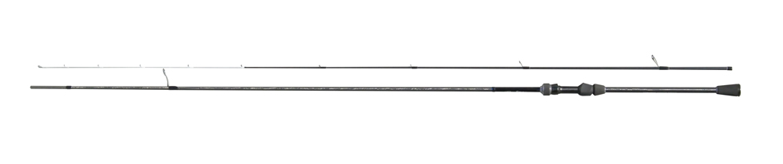
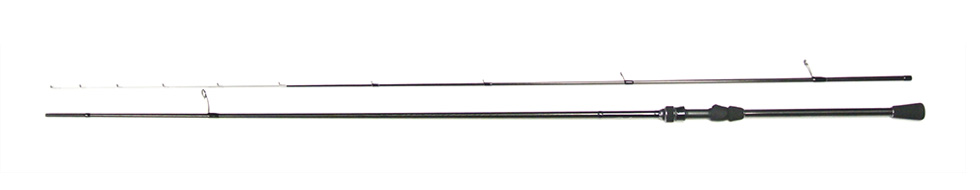
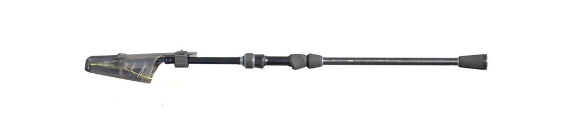

デイスター CDS94L-CS バイブレーションジグヘッドスペシャル
（DayStar. CDS94L-CS VIBRATION JIGHEAD SPECIAL）
デイスター CDS94L-CS バイブレーションジグヘッドスペシャル（DayStar. CDS94L-CS VIBRATION JIGHEAD SPECIAL）はCOREMAN（コアマン）のシーバスロッドです。
デイスター CDS94L-CSは、コアマンの代表作VJ-16バイブレーションジグヘッドの性能をより引き出し、よりハイレベルな釣果を出すために作られたスペシャルモデルです。河口・干潟・サーフ・ゴロタ浜など、全国のシャローエリアでシーバスをデイゲームで狙うためのロッドです。

画像出典:コアマン公式HP
スペック
- メーカー
- COREMAN（コアマン）
- タイプ
- シーバスロッド（スピニング）
- モデル
- CDS94L-CS
- 長さ
- 9ft4in
- 継数
- 2ピース
- ティップ
- カーボンソリッドティップ
- ライン
- MAX 14lb
- ルアー
- MAX 28g（マスターアングラーは MAX 35g）
- ベストルアー
- VJ-16 バイブレーションジグヘッド
- 自重
- 125g
- ガイド
- オールチタンフレーム SiCリング Kガイド
- 付属品
- 専用ロッドケース（ハードタイプ）
- 価格
- 39,500円（税別）
▼今すぐチェック
デイスター CDS94L-CS バイブレーションジグヘッドスペシャルの特徴
VJ-16のために、ティップ・ベリー・バットを作り込んだ専用ロッド
-
小さなバイトをのせるカーボンソリッドティップ
ティップには、感度を保ちながらも小さなバイトを逃さずにのせるカーボンソリッドティップを搭載。日中のシビアなシーバスのバイトを拾いやすい。
-
VJの釣りに合わせたしなやかなベリー
ベリーは、表層からやや下のレンジをテンポ良くステディリトリーブで探るVJの釣りに合わせた設計。バイトを弾かず、ティップと連動してしなやかに入る。
-
ウェーディングを想定したバット
バットはウェーディングを想定し、シーバスと近距離でファイトしてもショックを吸収してバラさないパワーバランス。オールチタンフレームのSiCリングKガイドを採用している。
デイスター CDS94L-CS バイブレーションジグヘッドスペシャルの選び方
VJ-16をメインにシャローのデイゲームをするなら、まず候補になる1本。9ft4inの長さで遠投しやすく、MAX28g（マスターアングラーはMAX35g）までのルアーに対応する。
鉄板バイブやパワーブレードなど、重めのメタル系ルアーで広く攻めたいなら、9ft6inでパワーのあるCDS96ML-CSも比較してみてください。
デイスター CDS94L-CS バイブレーションジグヘッドスペシャルの向いている釣り
河口・干潟・サーフ・ゴロタ浜などのシャローエリアで、VJ-16を中心にシーバスのデイゲームをする釣りに向いている。
ウェーディングで足元までしっかり寄せてファイトするスタイルにも合う1本です。
ワンポイント
専用のハードロッドケースが付属するので、遠征や車での移動でもロッドを守りやすいです。
デイゲームでは日中の視界が利くぶんシーバスもシビアになります。ソリッドティップの感度を活かして、小さな違和感にも合わせを入れていきましょう。
デイスターシリーズの使い分け
| モデル | 長さ／ルアー | 得意な場面 |
|---|---|---|
| CDS94L-CS | 9ft4in／MAX28g | VJ-16専用・シャローのデイゲーム（本記事のモデル） |
| CDS96ML-CS | 9ft6in／MAX30g | アイアンプレート専用・メタル系の遠投 |
| CDS80ML-CS/T | 8ft0in／MAX30g | 5ピースの振出。1本でコアマンルアー全般に |
デイスターには、ほかにアルカリダート用のCDS86L-CS・CDS82LL-CSや、ショートモデルのCDS76L-CS/Tなどもラインナップされている。
▼今すぐチェック
デイスター CDS94L-CS バイブレーションジグヘッドスペシャルとあわせてチェックしたいアイテム
-
 VJ-16
コアマン
詳細はこちら＞
VJ-16
コアマン
詳細はこちら＞
このロッドのベストルアー。VJ-16の性能を引き出すために作られたロッドなので、まずはセットで。
-

デイスター CDS96ML-CS コアマン 詳細はこちら＞アイアンプレート専用モデル。メタル系ルアーを遠投したい時に。
-

デイスター CDS80ML-CS/T コアマン 詳細はこちら＞5ピースの振出モデル。電車や自転車での釣行用に。